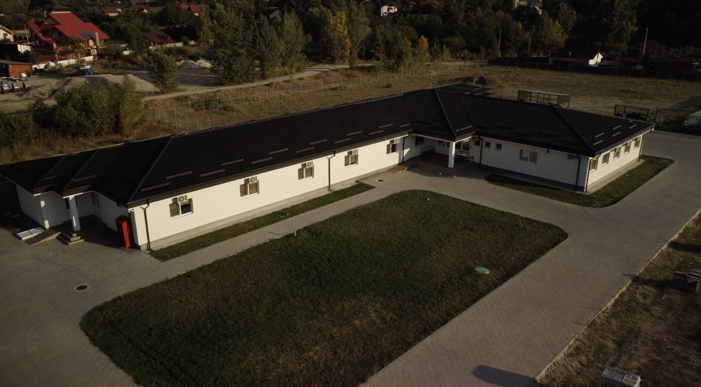
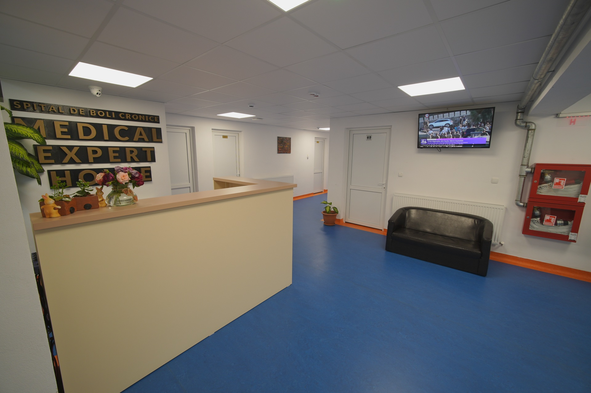
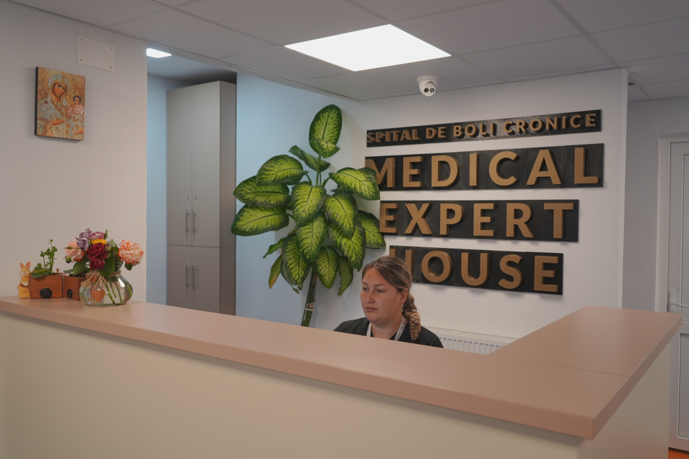
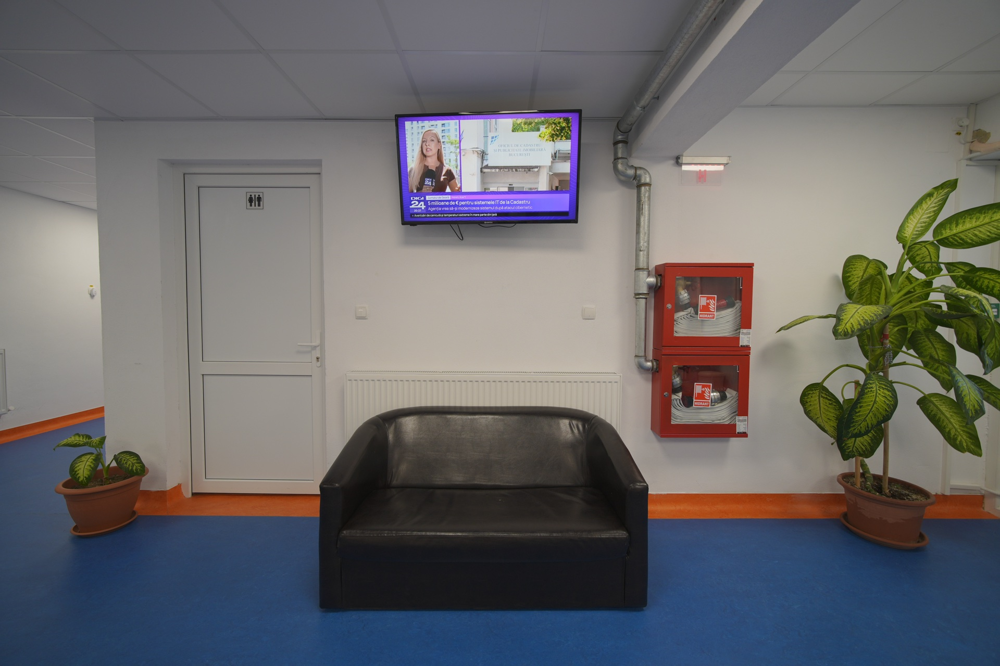
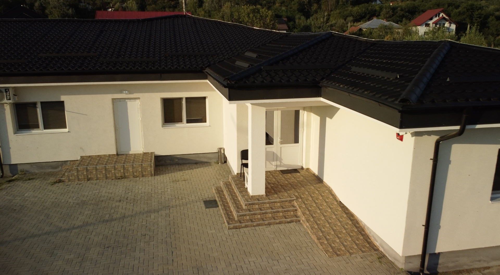
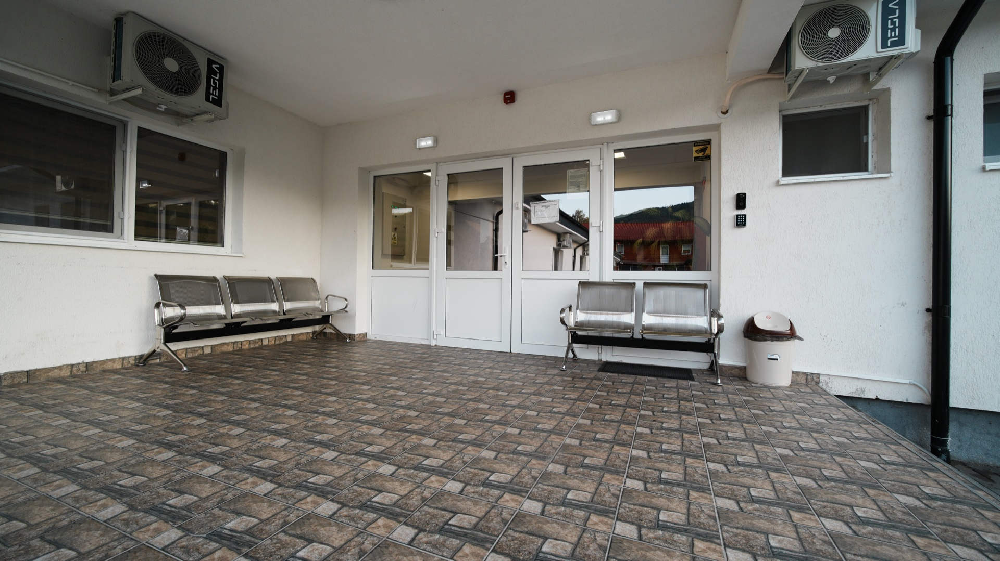
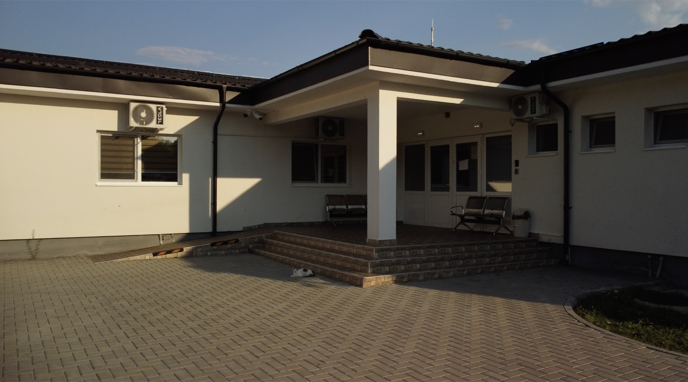

Faceți clic pe orice fotografie pentru a o mări în ecran complet.
Atingeți o fotografie pentru mărire.
11 Fotografii

Exterior
Vedere aeriană complex


Exterior
Fațadă & curte verde

Accesibil
Rampă cărucioare

Interior
Recepție centrală


Interior
Zonă primire & lounge


Personal
Birou triaj & internări

Igienă
Circuite sterile & linoleum


Confort
Relaxare & TV pacienți


Exterior
Pavilion curte interioară


Relaxare
Terasă acoperită


Exterior
Curte interioară pavată